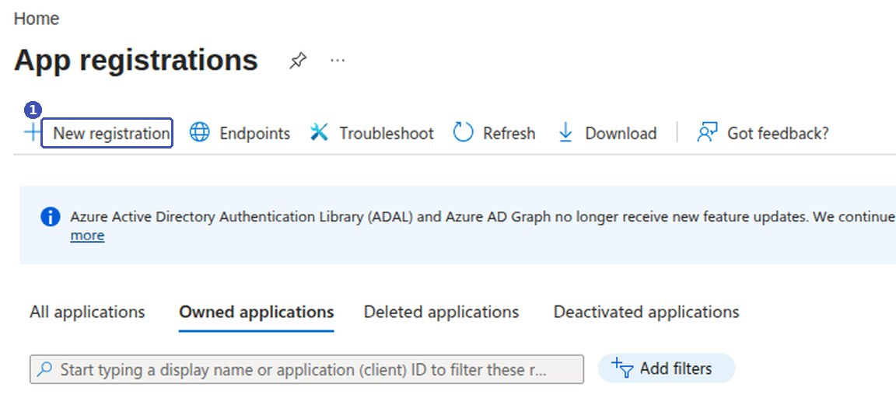
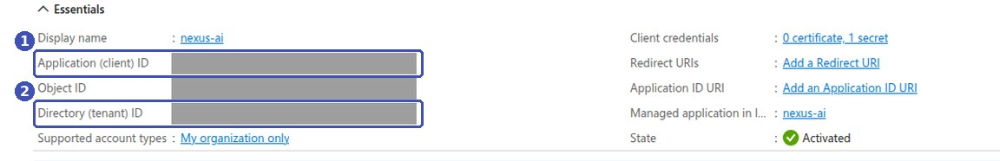
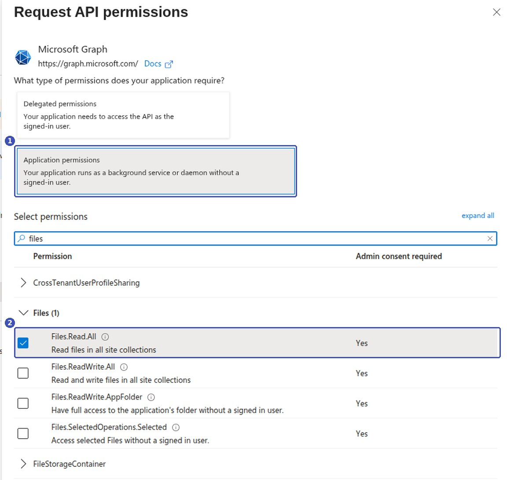
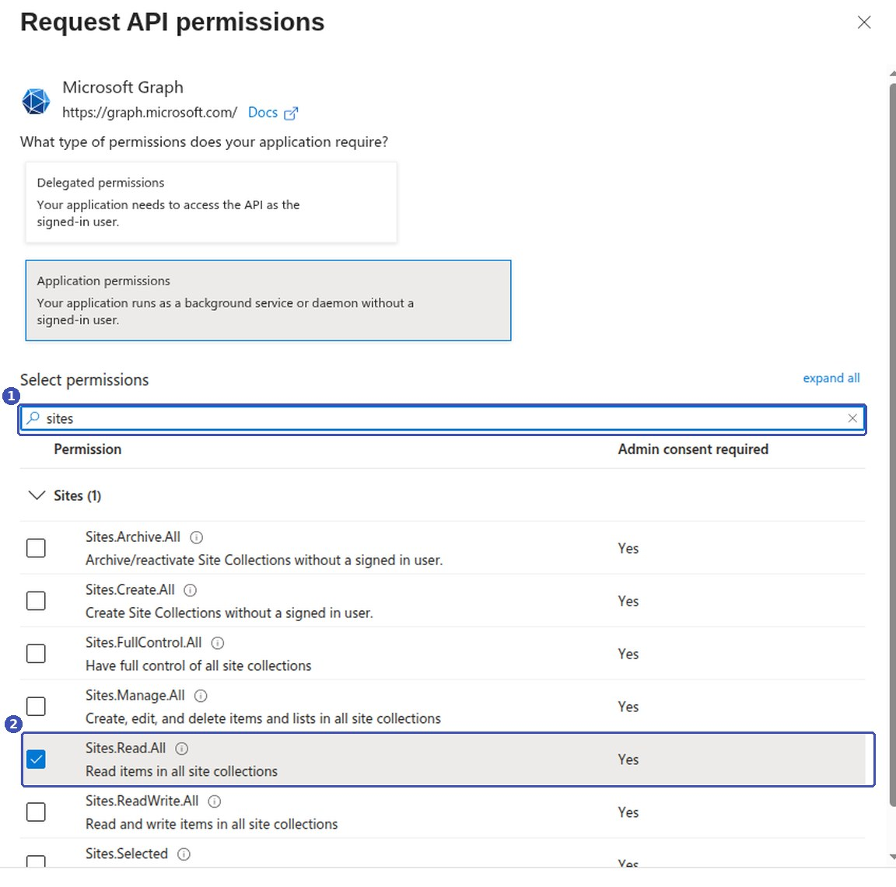
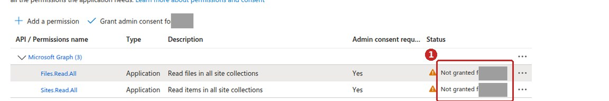
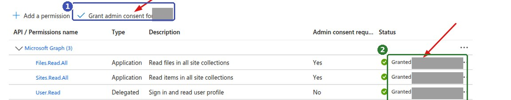
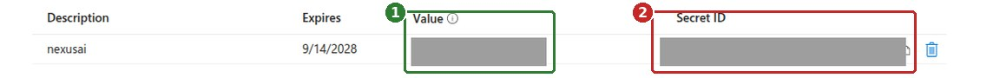

Lấy khoá kết nối Microsoft 365¶
Trang này hướng dẫn quản trị viên Microsoft 365 tạo một ứng dụng trên Azure để lấy ba giá trị mà Nexus AI cần khi kết nối OneDrive hoặc SharePoint: Tenant ID, Client ID và Client Secret.
Về các ảnh minh hoạ
Khung màu và số thứ tự trên ảnh là chú thích của tài liệu, không phải giao diện Azure. Các ô xám là thông tin riêng của tổ chức đã được che.
Ai cần đọc trang này¶
Chỉ quản trị viên Microsoft 365 của tổ chức làm được các bước dưới đây, vì bước cấp quyền đòi hỏi quyền quản trị. Người dùng thường chỉ cần xin ba giá trị đã tạo xong rồi làm theo Đồng bộ OneDrive và SharePoint.
Bạn chỉ phải làm một lần. Một ứng dụng dùng chung được cho mọi nguồn dữ liệu OneDrive và SharePoint sau này.
Vì sao cần ứng dụng riêng¶
Nexus AI đồng bộ tài liệu chạy nền theo chu kỳ, không có người ngồi đăng nhập ở mỗi lần chạy. Vì vậy nó không dùng tài khoản cá nhân của bạn mà dùng một ứng dụng có danh tính riêng, được tổ chức cấp quyền đọc tài liệu.
Toàn bộ quy trình gồm năm bước:
- Đăng ký ứng dụng.
- Lấy Client ID và Tenant ID.
- Cấp quyền đọc tài liệu cho ứng dụng.
- Chấp thuận quyền với tư cách quản trị viên.
- Tạo Client Secret.
Bước 1 — Đăng ký ứng dụng¶
- Mở portal.azure.com, tìm và mở Microsoft Entra ID (tên cũ là Azure Active Directory).
-
Ở cột bên trái chọn App registrations, rồi nhấn New registration.

-
Điền biểu mẫu:
- Name — tên gợi nhớ, ví dụ
nexus-ai. Tên này chỉ hiển thị trong Azure. - Supported account types — chọn Accounts in this organizational directory only.
- Redirect URI — để trống. Nexus AI không dùng luồng đăng nhập qua trình duyệt nên không cần mục này.
- Name — tên gợi nhớ, ví dụ
-
Nhấn Register.
Bước 2 — Lấy Client ID và Tenant ID¶
Sau khi đăng ký, Azure mở thẳng trang Overview của ứng dụng. Hai giá trị bạn cần nằm ngay trong khung Essentials:

| Nhãn trên Azure | Ô tương ứng trong Nexus AI |
|---|---|
| Application (client) ID | Client ID |
| Directory (tenant) ID | Tenant ID |
Cả hai đều có dạng xxxxxxxx-xxxx-xxxx-xxxx-xxxxxxxxxxxx. Rê chuột vào giá trị rồi nhấn biểu tượng chép để lấy nguyên văn.
Object ID thì sao?
Khung Essentials còn một dòng Object ID rất giống hai giá trị trên. Nexus AI không dùng giá trị này — đừng chép nhầm.
Bước 3 — Cấp quyền đọc tài liệu¶
- Ở cột bên trái của ứng dụng, chọn API permissions, rồi nhấn Add a permission.
- Chọn Microsoft Graph.
- Khi Azure hỏi What type of permissions does your application require?, chọn Application permissions.
-
Gõ
filesvào ô tìm kiếm, mở nhóm Files, tích Files.Read.All, rồi nhấn Add permissions.
-
Nếu tổ chức dùng SharePoint, nhấn Add a permission lần nữa, cũng chọn Microsoft Graph > Application permissions, gõ
sites, tích Sites.Read.All rồi Add permissions.
Tóm tắt quyền cần cấp:
| Quyền | Loại | Cần cho |
|---|---|---|
| Files.Read.All | Application | OneDrive và SharePoint |
| Sites.Read.All | Application | Chỉ SharePoint |
Phải là Application permissions, không phải Delegated
Đây là lỗi hay gặp nhất ở bước này. Delegated permissions chỉ hoạt động khi có người dùng thật đang đăng nhập — mà Nexus AI thì chạy nền. Chọn nhầm Delegated, ứng dụng vẫn tạo được nhưng mọi lần đồng bộ đều thất bại vì thiếu quyền. Kiểm tra lại: ở bảng quyền, cột Type phải ghi Application.
Nên cấp cả hai quyền ngay từ đầu
Nếu chưa chắc sau này có dùng SharePoint hay không, cứ cấp cả Files.Read.All và Sites.Read.All. Cả hai đều là quyền chỉ đọc, và cấp sẵn thì đỡ phải quay lại làm lại bước chấp thuận.
Bước 4 — Chấp thuận quyền¶
Quyền vừa thêm chưa có hiệu lực. Ở bảng Configured permissions, cột Status đang hiện cảnh báo ⚠️ Not granted for …:

Nhấn Grant admin consent for … ngay phía trên bảng, rồi xác nhận Yes. Cột Status chuyển sang ✅ Granted for … màu xanh:

Bỏ qua bước này là kết nối chắc chắn hỏng
Không có dấu ✅ xanh ở cả hai dòng quyền thì Nexus AI sẽ báo lỗi thiếu quyền khi đồng bộ, dù Tenant ID, Client ID và Client Secret đều đúng.
Nếu nút Grant admin consent bị mờ, tài khoản của bạn không đủ quyền quản trị — cần nhờ một Global Administrator hoặc Privileged Role Administrator bấm giúp.
Bước 5 — Tạo Client Secret¶
- Ở cột bên trái, chọn Certificates & secrets, mở tab Client secrets, rồi nhấn New client secret.
- Điền Description (tên gợi nhớ) và chọn Expires — thời hạn của secret.
- Nhấn Add.

Azure hiện một dòng mới với hai cột dễ nhầm:
| Cột | Nội dung | Dùng không? |
|---|---|---|
| Value | Chuỗi ngẫu nhiên khoảng 40 ký tự | ✅ Đây là Client Secret |
| Secret ID | Mã dạng xxxxxxxx-xxxx-… có 4 dấu gạch nối |
❌ Không dùng |
Chép Value ngay lập tức
Azure chỉ hiện đầy đủ Value đúng một lần, ngay sau khi tạo. Rời trang hoặc tải lại là nó bị che vĩnh viễn, chỉ còn vài ký tự đầu — như trong ảnh trên. Lúc đó không có cách nào xem lại, bắt buộc phải xoá secret cũ và tạo secret mới.
Secret có hạn dùng
Đến ngày hết hạn ở cột Expires, mọi nguồn dữ liệu dùng secret đó sẽ ngừng đồng bộ. Hãy ghi lại ngày này và tạo secret mới trước khi hết hạn.
Bàn giao cho người dùng¶
Gửi cho người sẽ tạo nguồn dữ liệu ba giá trị sau:
| Giá trị | Lấy ở đâu |
|---|---|
| Tenant ID | Overview → Directory (tenant) ID |
| Client ID | Overview → Application (client) ID |
| Client Secret | Certificates & secrets → cột Value |
Riêng SharePoint, người dùng cần thêm Site URL của trang chứa tài liệu, dạng https://contoso.sharepoint.com/sites/MySite.
Các bước tiếp theo nằm ở Đồng bộ OneDrive và SharePoint.
Client Secret là mật khẩu
Ai có ba giá trị này đều đọc được toàn bộ tài liệu trong phạm vi đã cấp quyền. Gửi qua kênh an toàn, đừng dán vào chat nhóm hay email thường.
Câu hỏi thường gặp¶
Có phải tạo hai ứng dụng riêng cho OneDrive và SharePoint không?¶
Không. Một ứng dụng có đủ cả Files.Read.All và Sites.Read.All dùng được cho mọi nguồn dữ liệu OneDrive lẫn SharePoint.
Đồng bộ báo sai thông tin đăng nhập?¶
Kiểm tra theo thứ tự:
- Client Secret có phải cột Value không, hay đã chép nhầm Secret ID.
- Secret đã hết hạn chưa — xem cột Expires.
- Client ID và Tenant ID có bị chép nhầm sang Object ID không.
Đồng bộ báo thiếu quyền?¶
Thông tin đăng nhập đã đúng, vấn đề nằm ở quyền. Mở lại API permissions và kiểm tra:
- Cột Type của cả hai dòng quyền phải là
Application, không phảiDelegated. - Cột Status phải là ✅ Granted, không còn cảnh báo ⚠️.
Secret sắp hết hạn thì làm gì?¶
Tạo secret mới ở Certificates & secrets trước ngày hết hạn, chép Value mới, rồi cập nhật vào từng nguồn dữ liệu trong Nexus AI. Xoá secret cũ sau khi đã xác nhận đồng bộ chạy bình thường.
Tại sao phải cấp quyền đọc toàn bộ tài liệu?¶
Hai quyền Files.Read.All và Sites.Read.All là mức nhỏ nhất mà Microsoft Graph cung cấp cho ứng dụng chạy nền — Microsoft không có quyền giới hạn theo từng thư mục. Nếu chỉ muốn lập chỉ mục một phần, hãy giới hạn ở phía Nexus AI bằng ô Folder Path (OneDrive) hoặc Site URL (SharePoint) khi tạo nguồn dữ liệu.